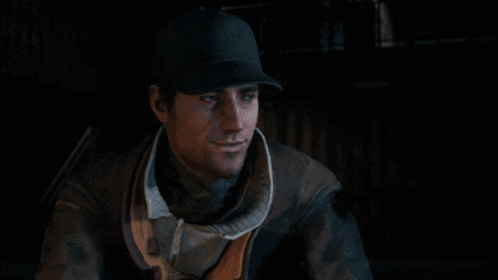
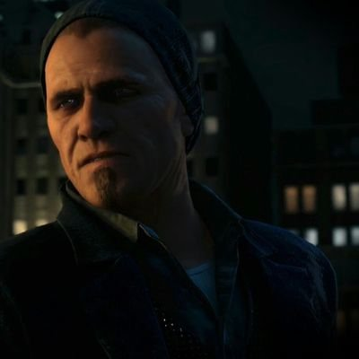
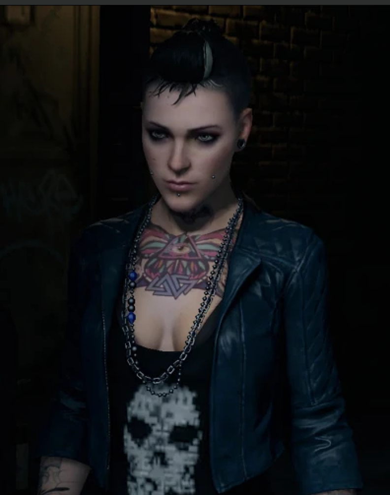
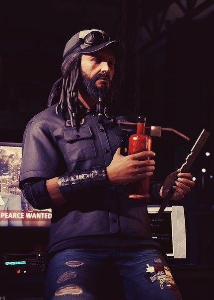
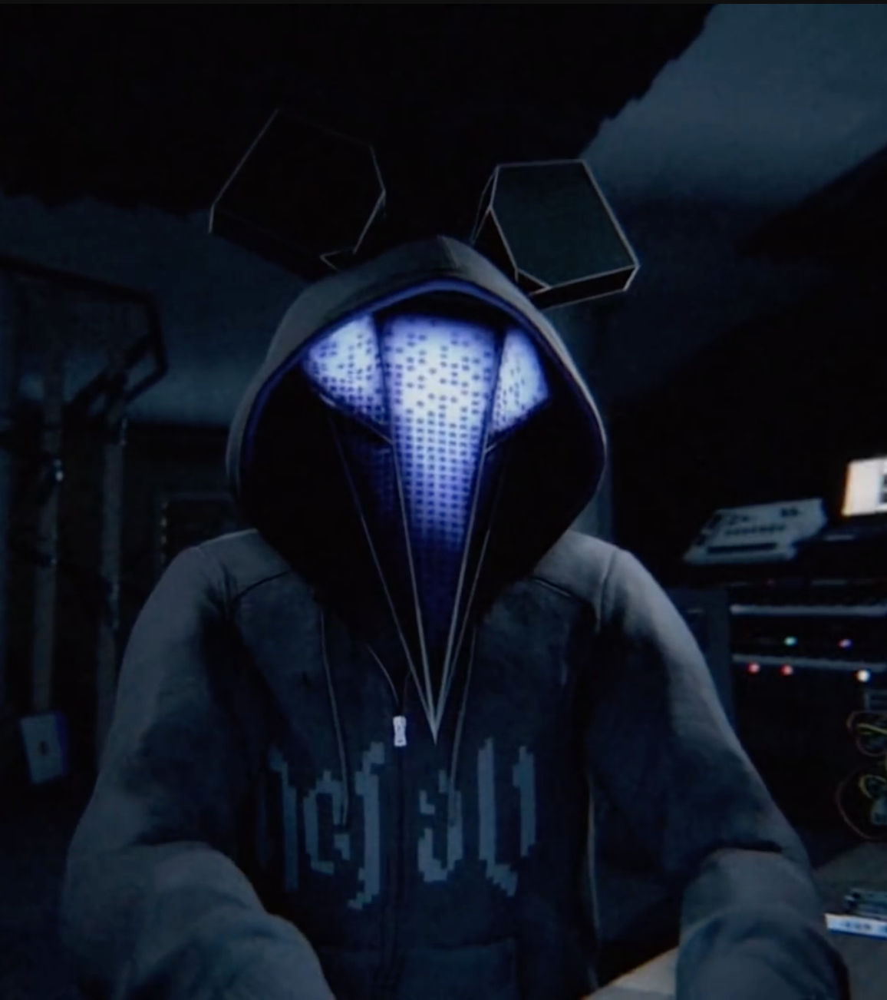
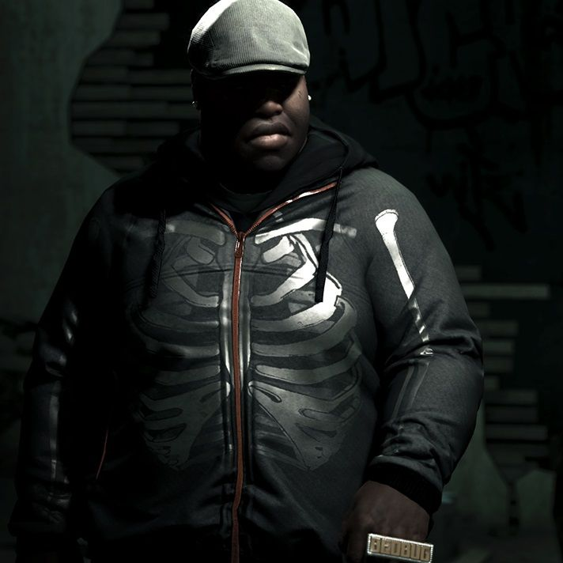
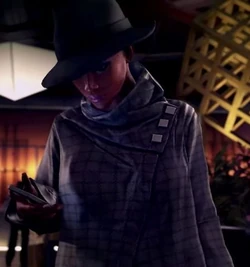
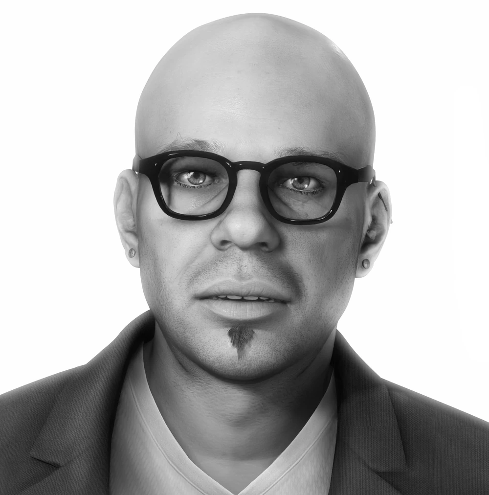

Aiden Pearce

Age
Nationality
Residence
Alias
Affiliations
Watch Dogs 1
Watch Dogs Legion
Professions
Evolution of his ctOS profile


Description
Aiden Pearce (also known as The Vigilante and The Fox) is the main protagonist of Watch Dogs, a minor character in Watch Dogs 2, a playable character in Watch Dogs: Legion and one of the two main protagonists (alongside Wrench) of the Blood line DLC. He is the overall main protagonist of the Watch Dogs series, since he has appeared in all three games. He is a highly skilled grey hat hacker who has access to the ctOS of Chicago using a highly specialized device, the Profiler. Because his actions led to a family tragedy, Aiden has taken to a personal crusade against the powers that be. His obsession with security, surveillance, and control borders on the paranoid and dangerous, extending to monitoring his own family (unbeknownst to them).
Damien Brenks

Age
Nationality
Profession
Status
ctOS Profile

Description
Damien’s mind is restless. He’s easily distracted by new ideas, but when he does find focus, he’s precise. Self-absorbed bordering on narcissistic, it was a horrendous blow to his psyche when he was left beaten near-death. Damien plays the world around him like a chess board: seeing many intricate moves ahead and manipulating his opponents from the opening moves. He’ll have his revenge, his own way.
Clara Lille

Nationality

Clara was born in 1985 and grew up in the Quebec province of Canada (possibly in the Laurentides region). As a child, she developed an interest in urban legends. Her father often took her camping in Mont-Tremblant, and the pair would go looking for treasure. What she didn't realize was that he was stealing valuables from cabin's. She once discovered an ancient Roman coin which he allowed her to keep. As an adult, Clara worked as a tattoo artist. She grew to become a skilled hacker and later became a member of hacker activist group DedSec, under the alias BadBoy 17. She also became a fan of legendary hacker Raymond Kenney.
Raymond Kenney


Raymond Kenney, also known as T-Bone Grady or T-Bone, is the tritagonist of Watch Dogs and the main protagonist of Watch Dogs: Bad Blood. He also appears in Watch Dogs 2 as a supporting character. Raymond was born on July 18, 1961, and grew up in Upstate New York near the Canadian Border. As a child, he developed a passion for tinkering with computers and grew to become a skilled basement hacker.
JB Markowicz


Tyrone "Bedbug" Hayes


Tyrone was born in 1994, which makes him one of the youngest characters in the game. It appears that he was raised by his grandmother. Bedbug is the cousin of the Viceroys leader Iraq. In an unknown year, he joined the Viceroys and became the lieutenant of a street section of the gang. Despite hoping he could become a high-ranked member because he is Iraq's cousin, he never became one. In fact, Iraq did not like Bedbug because he is lazy, saying that he is like their grandma's bulldog "Fathead". As an alias, Tyrone uses "Bedbug", much to his grandmother's disgust. Bedbug is shown to be a lazy person and easily scared. He, however, obeys Aiden and breach inside Iraq's rooms. He also seems to be clumsy as he almost drops his recording device in his first audio log. When considering how to infiltrate Rossi-Fremont Aiden easily recognized Tyrone as a mark due to his status and incompetence within the gang describing him as "a bad combination" of being ambitious but lazy due to his assumption that if anything happened to Iraq he would be the next in line to command the Viceroy's, however both Iraq and the rest of the gang are quick to put him in his place when called for due to being weak and repeatedly making mistakes.
Dona "Poppy" Dean

Poppy is an African-American female with blue eye shadow and a shaven head. One of her notable traits is her nose chain, which connects her nose piercing with her ear piercing. She also has a Chicago South Club tattoo on her upper neck, which is used as a tracking device by the Club. Poppy seems to have courage and heart, as she refuses to leave the auction because she doesn't want to leave her "friends" alone. She's a victim of human trafficking
Joseph Demarco

Description :
Joseph DeMarco's records indicated he was charged for various crimes, including perjury, conspiracy, and solicitation of murder. However, by the events of Watch Dogs, he was acquitted of all those charges. He died after the events of the game